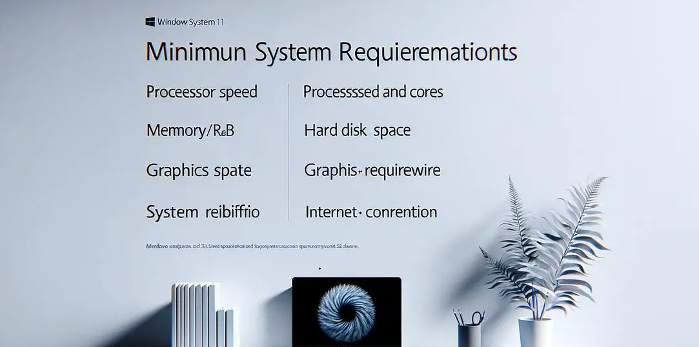

Minimum Requirements

Gaming on a computer can give players better graphics, smoother gameplay, and more control compared to consoles. However, not every computer is powerful enough to run modern games. Different games require different hardware specifications in order to run properly. This website explains the basic PC requirements needed for gaming. It will help beginners understand what hardware is needed to run popular games and what components are important in a gaming computer.
How to check your PC specs
Not sure what specs your PC has? Watch this short video to find out how to check them before comparing below.
The following minimum specifications are based on a survey of 50 students and the most popular games they play.
| Game | OS | CPU | RAM | GPU | Storage |
|---|---|---|---|---|---|
| Minecraft | Windows 10/11 | Intel Core i3 | 4GB | Intel HD 4000 | 4GB |
| Fortnite | Windows 10/11 | Intel Core i3 | 8GB | Intel HD 4000 | 29GB |
| GTA V | Windows 10/11 | Intel Core i5 | 8GB | GTX 660 | 72GB |
| Cyberpunk 2077 | Windows 10/11 | Intel Core i5 | 8GB | GTX 1060 | 70GB |
| EA FC 26 | Windows 10/11 | Intel Core i5 | 8GB | GTX 970 | 50GB |